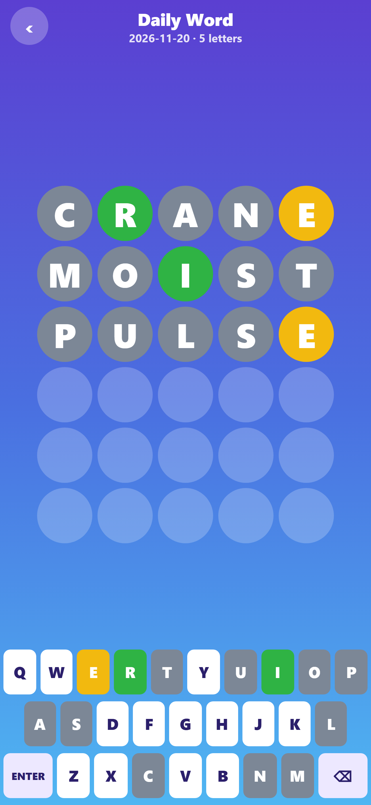
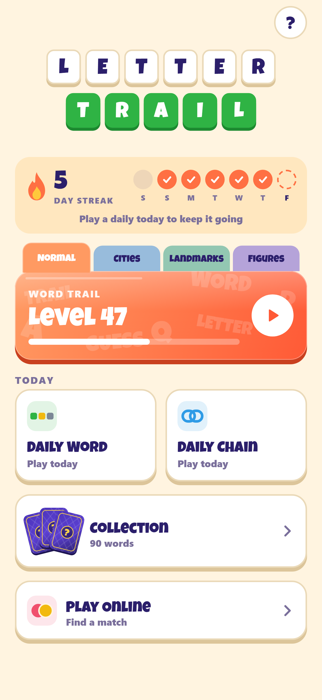
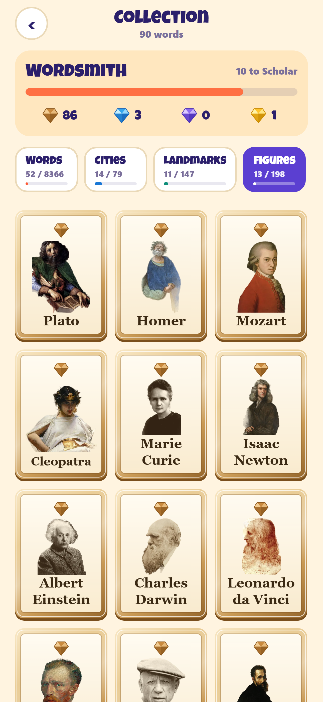
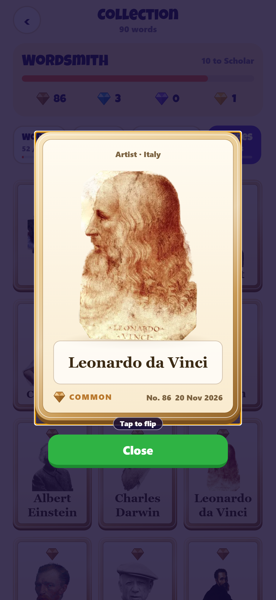
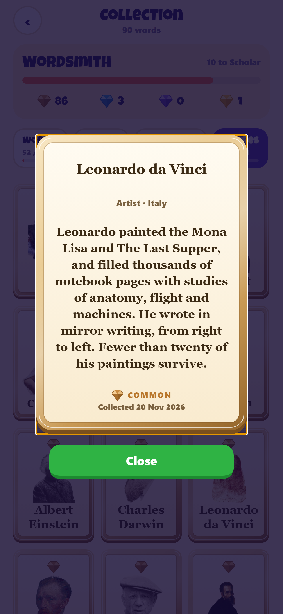
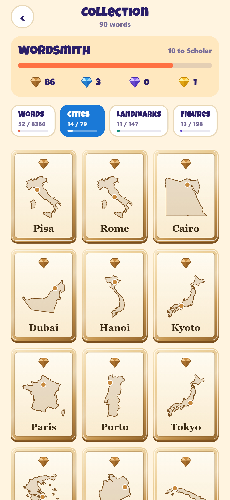

Lettertrail store assets
Screenshots are 1290 x 2796 PNG. Tap "Open full size", then press and hold the picture and choose Save to Photos.
Screenshots

Open full size

Open full size

Open full size

Open full size

Open full size

Open full size
Text to paste
Name
Lettertrail
Subtitle
Guess words, collect cards
Promotional text
A new hidden word every day, a trail of levels from three letters up, and a card collection of cities, landmarks and famous figures to fill.
Description
Lettertrail is a word game with somewhere to go. GUESS THE WORD Each level hides a word. You have six tries. After every guess the letters turn green, yellow or grey to show how close you are. The trail starts with three-letter words and climbs, level by level, to the longest words in the dictionary. A NEW CHALLENGE EVERY DAY The Daily Word is the same for everyone and comes once a day. Keep your streak alive, then try the daily word chain against the clock. CITIES, LANDMARKS AND FAMOUS FIGURES Clear levels to open three more trails. Spell your way from Pisa to Ittoqqortoormiit, from Big Ben to the Sky Tower, from Plato to Sacagawea. COLLECT EVERY CARD Every word you solve becomes a card with a rarity and a fact. City cards show the map, landmark and figure cards show a picture, and each one flips over to tell you something worth knowing. Rise from Rookie to Legend as your collection grows. PLAY ONLINE Take turns building a word chain against another player. Three hearts, a ticking clock, and powerups that drop as you play: steal time, double your score, shield a heart or squeeze your rival's clock. MADE TO BE FAIR - Free. No ads. No purchases. - No account and no sign-up. Open it and play. - Thousands of levels and a dictionary that keeps growing.
Keywords
word,puzzle,guess,daily,spelling,letters,vocabulary,trivia,cities,landmarks,brain,chain,collect
Support URL
https://pouyanmeishany.github.io/lettertrail-site/support/
Privacy Policy URL
https://pouyanmeishany.github.io/lettertrail-site/privacy/
Marketing URL (optional)
https://pouyanmeishany.github.io/lettertrail-site/
Copyright
2026 Pouyan Meishany
Notes for the reviewer
Lettertrail is a word game with no account and no purchases. Everything is available from first launch except three extra trails (Cities, Landmarks, Figures), which open after clearing levels 10, 15 and 20 of the main trail.
Online play: tap Play Online, then Find match. If no other player is waiting you are matched with a computer player after at most 60 seconds. Player names are random nicknames chosen by the server; players cannot type names or messages, so there is no user-generated content.
The app sends anonymous gameplay data to our own server. It can be switched off in the "How to play" popup on the Home screen ("Share anonymous gameplay data").
The pictures on the collection cards are public-domain or CC0 works from Wikimedia Commons.
The app uses expo-updates to load JavaScript and word-data updates that do not change the app's purpose.